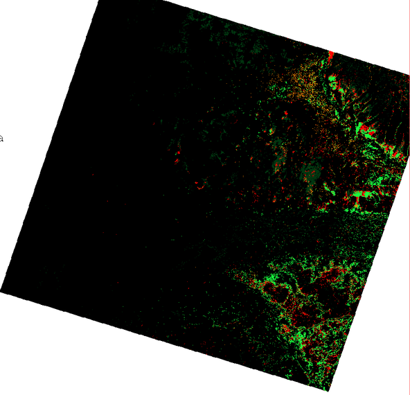
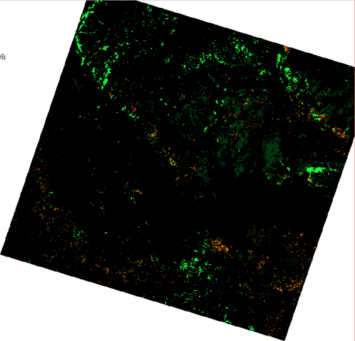
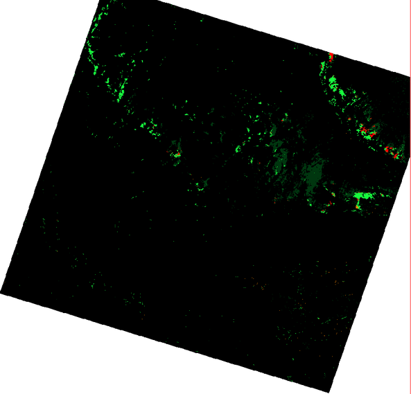

class: center, middle # Выделение типов растительного покрова по восстановленной кривой сезонных изменений NDVI ## (на основе данных MODIS) ### Колесов Д.А., Филиппов И.В. --- # Содержание ### 1. История вопроса ### 2. Используемые методы ### 3. Реализация и результаты ### 4. Технические подробности --- # Цель Повысить качество выделения <<трудных>> типов растительного покрова за счет привлечения временных серий снимков. # Задачи * Восстановление сезонного хода индекса NDVI (очистка от шумов). * Произвести классификацию типов растительного покрова по очищенным сериям NDVI. * Проверить точность классификации на <<трудных>> типах растительности. # Рабочая гипотеза Разные типы растительных сообществ имеют свои фенологические особенности, которые отражаются в форме кривой сезонных изменений NDVI. ??? Рассказать о начальной суперцели -- поиску уникальных местообитаний; Уникальное местообитание - местообитание с редкими природными условиями. Они косвенно отображаются в спектральных характеристиках участка. Для поиска таких мест нужно определить небольшие по площади отличающиеся от общей массы участки. В случае анализа исходных снимков такие участки приходятся не на действительно уникальные места, а на участки снимка с тенями, неоднородностью атмосферы и т.п. Существуют классы, которые трудно дешифрируются по единовременному снимку, тогда мы берем несколько снимков, чтобы уловить динамику, но тогда шумы от нескольких снимков "всплывают" и шумы мешают еще больше. Отсюда возникает задача очистки ДЗЗ от шумов --- ## Классический подход к выделению типов растительного покрова по ДДЗЗ .center[  ] .center[Усредненные характеристические кривой отражательной способности для различных объектов.] .small[ * Различные объекты в разных лучах спектра выглядят по-разному, поэтому съемка одновременно в нескольких областях спектра дает существенную информацию. * Каждый пиксель, соответствующий координатам `\((x,y)\)` можно представить в виде вектора значений яркости каждого отдельного изображения: `$$ \overline{P}(x,y) = \{b_1(x,y), b_2(x,y), \dots, b_n(x,y) \} $$` где `\(\overline{P}\)` - вектор яркостей, `\(b_i(x,y)\)` - значение яркости по `\(i\)`-му каналу в точке с координатами `\((x,y)\)`. ] ??? Кратко рассказать о том, как производится классификация ДЗЗ на основе мультиспектральных данных. --- ## NDVI .small[NDVI (Normalized Difference Vegetation Index) нормализованный относительный индекс растительности - простой количественный показатель количества фотосинтетически активной биомассы.] .left-column[ ### Примеры значений .small[ | Тип объекта | Значение NDVI | |-------------|:--------------:| | Густая растительность | 0.7 | | Разреженная растительность | 0.5 | | Открытая почва | 0.025 | | Облака | 0 | ] ] .right-column[ .small[ Пусть NIR - отражение в ближней инфракрасной области спектра, RED - отражение в красной области спектра, тогда: `$$ NDVI = \frac{NIR - RED}{NIR + RED} $$` ] ] .center[  ] .center[.small[Участки усредненной характеристической кривой отражения растительности] .footnote[(http://gis-lab.info/qa/ndvi.html)]] --- # Плюсы и минусы одномоментных снимков ## Плюсы * Хорошо изученные методы анализа снимков. * Проще интерпретировать данные. ## Минусы * Каждый одномоментный снимок делается в уникальных условиях (геометрия системы Солнце - Земная поверхность - спутник; атмосферные условия; изменения Земной поверхности) => <<хорошие>> параметры анализа для одного снимка будут неоптимальны для другого. * Вследствие неоднородности атмосферы одинаковые объекты в разных частях снимка могут быть отражены на нем по-разному. * Объект виден в статике и разные объекты могут выглядеть одинаково. ??? О том, что не хорошо в использовании одномоментных снимков. --- # Использование временных серий снимков ## Плюсы * Возможность анализа формы кривой сезонных изменений. * Возможность на базе статистических методов отфильтровать шумы, внесенные атмосферными и др. условиями. ## Минусы * Наличие регулярных временных рядов только для снимков с низким пространственным разрешением. * Сложность интерпретации данных. ??? О том, что вообще появляется такая возможность -- использовать множество снимков на одну территорию (Landsat, MODIS и т.д.) -- накоплены многолетние ряды данных --- .center[  ] Выборка значений «сырых» рядов NDVI, извлеченных непосредственно из MOD13 для: 1 - залесенных березой болот; 2 - зарастающих березой гарей. --- .center[  ] Пример кривых NDVI после удаления высокочастотных компонент для: 1 - залесенных березой болот; 2 - зарастающих березой гарей. --- ## Разделимость классов по коэффициентам разложения в ряд Фурье .center[  ] Пример разделимости классов по первым коэффициентам разложения в ряд Фурье для: 1 - залесенных березой болот; 2 - зарастающих березой гарей. --- ## Пример "одномоментного" многозонального снимка .center[  ] --- ## Классификация снимка на 18 классов .center[  ] --- ## Классификация одноментного снимка с выделением "трудных классов" .left-column[ ###Оценка точности классификации .small[ Cats | Kappa (по классам) -----|:---------: "Не трудные" классы | 0.323157 Залесенные сосной болота | 0.663677 Залесенные березой болота | 0.406724 Мезотрофные вахтовые болота | 0.801587 Мезотрофные гипновые топи | 0.668466 Kappa (для всей карты) **0.51** ] ] .right-column[ .center[  ] ] --- ## Классификация по первым 3-м значимым гармоникам .left-column[ ###Оценка точности классификации .small[ Cats | Kappa (по классам) -----|:---------: "Не трудные" классы | 0.472705 Залесенные сосной болота | 0.373516 Залесенные березой болота | 0.791791 Мезотрофные вахтовые болота | 0.341439 Мезотрофные гипновые топи | 0.798712 Kappa (для всей карты) **0.52** ] ] .right-column[ .center[  ] ] --- ## Классификация по первым 5-ти значимым гармоникам .left-column[ ###Оценка точности классификации .small[ Cats | Kappa (по классам) -----|:---------: "Не трудные" классы | 0.634187 Залесенные сосной болота | 0.460223 Залесенные березой болота | 0.716393 Мезотрофные вахтовые болота | 0.571429 Мезотрофные гипновые топи | 0.817011 Kappa (для всей карты) **0.64** ] ] .right-column[ .center[ <img src="img/05_modis_211.png" width=500 /> ] ] --- ## 5 значимых гармоник с добавлением каналов мультиспектрального снимка .left-column[ ###Оценка точности классификации .small[ Cats | Kappa (по классам) -----|:---------: "Не трудные" классы | 1.000000 Залесенные сосной болота | 0.327354 Залесенные березой болота | 0.682927 Мезотрофные вахтовые болота | 0.761905 Мезотрофные гипновые топи | 0.830918 Kappa (для всей карты) **0.70** ] ] .right-column[ .center[  ] ] --- # Обзор методов Два крайних случая обработки мультивременных данных ДЗЗ для дальнейшей классификации. 1. Восстановление анализируемого изображения (отражающей способности поверхности Земли или производных продуктов, например, NDVI) на произвольные даты. Далее классификация нескольких снимков за интересующие даты. 2. Извлечение признаков из снимков и классификация на их основе. Переходные варианты - методы, позволяющие одновременно и восстанавливать изображения, и извлекать признаки для классификации. ??? Литературы много, для удобства ее изложения приведу классификацию с точки зрения реализации анализа разновременных снимков. 1. Восстановление = очистка от шумов (облаков, теней и т.п.), т.е. получение "идеальной" поверхности. 2. Если говорить именно о классификации, то очищенные изображения -- побочный продукт, не обязательно их создавать. --- # Извлечение признаков Классические алгоритмы извлечения или синтеза признаков: * Метод главных компонент; * Карты Кохонена; ### Пример исследования: .footnote[Wardlow B. D., Egbert S. L., Kastens J. H. Analysis of time-series MODIS 250 m vegetation index data for crop classification in the US Central Great Plains // Remote Sensing of Environment. – 2007. – Т. 108. – №. 3. – С. 290-310.] Производится выбор дат съемки для последующей классификации. Оценка качества классификации строится на базе расстояния Джефриса-Мацуситы. --- # Очистка от шумов фильтром Савицкого-Голея. .footnote[Jönsson P., Eklundh L. TIMESAT - a program for analyzing time-series of satellite sensor data //Computers & Geosciences. – 2004. – Т. 30.] .small[ Есть временной ряд `\((t_i, I_i)\)`, `\(i=1, 2, \dots, N\)`. В скользящем окне длиной `\(2m +1\)` отсчетов производится аппроксимация многочленом степени d, коэффициенты которого рассчитываются методом наименьших квадратов. Для центральной точки окна по этому многочлену вычисляется значение, которое и будет результирующим значением отфильтрованной кривой в данной точке. Затем окно сдвигается на одну позицию и строится новая точка --- прогнозное значение кривой. Процедура повторяется до тех пор, пока не закончится исходный ряд. ] .center[  ] --- ## Фильтр Савицкого-Голея для NDVI .footnote[Chen J. et al. A simple method for reconstructing a high-quality NDVI time-series data set based on the Savitzky–Golay filter // Remote sensing of Environment. – 2004. – Т. 91. – №. 3. – С. 332-344.] .small[Авторы предлагают алгоритм, учитывающий то, что шумы в рядах NDVI обычно вызываются атмосферными явлениями и занижают значения NDVI.] .center[  ] .small[.center[Кривая NDVI для точки сосново-кустарничково-сфагнового олиготрофного болота (3 года наблюдений).]] --- # Подгонка параметрических кривых Очень часто используется подгонка кривых методом наименьших квадратов. Есть временной ряд `\((t_i, I_i)\)`, `\(i=1, 2, \dots, N\)`. Кривая моделируется в форме: ` $$ f(t) = c_1 \varphi_1(t) + c_2 \varphi_2(t) + \dots + c_M \varphi_M(t), $$ ` где `\(\varphi_1(t)\)`, `\(\varphi_2(t)\)`, ..., `\(\varphi_M(t)\)` произвольные базисные функции, а `\(c_1\)`, `\(c_2\)`, ..., `\(c_M\)` - некоторые коэффициенты. ??? Литературы много, мы рассматривает лишь то, что использовалось в нашем случае. Осветить основные статьи. --- # TIMESAT .footnote[Jönsson P., Eklundh L. TIMESAT - a program for analyzing time-series of satellite sensor data //Computers & Geosciences. – 2004. – Т. 30.] Методом наименьших квадратов подгоняются полиномы совместно с гармоническими функциями (`\(\omega=6\pi/N\)`): ` $$ \begin{split} f(t) = & c_1 + c_2 t + c_3 t^2 + c_4 \sin(\omega t) + c_5 \cos(\omega t) + \\ & c_6 \sin(2\omega t) + c_7 \cos(2\omega t) + c_8 \sin(3\omega t) + c_9 \cos(3\omega t) \end{split} $$ ` # Синтезирование изображений Landsat .footnote[Zhu Z. et al. Generating synthetic Landsat images based on all available Landsat data: Predicting Landsat surface reflectance at any given time //Remote Sensing of Environment. – 2015. – Т. 162. – С. 67-83.] ` $$ f_{simple}(t) = c_1 + c_2 \sin(\omega t) + c_3 \cos(\omega t) $$ ` ` $$ \begin{split} f_{advansed}(t) = & c_1 + c_2 \sin(\omega t) + c_3 \cos(\omega t) + \\ & c_4 \sin(2\omega t) + c_5 \cos(2\omega t) \end{split} $$ ` ` $$ \begin{split} f_{full}(t) = & c_1 + c_2 \sin(\omega t) + c_3 \cos(\omega t) + \\ & c_4 \sin(2\omega t) + c_5 \cos(2\omega t) + c_6 \sin(3\omega t) + c_7 \cos(3\omega t) \end{split} $$ ` ??? --- # Классификация на базе преобразования Фурье .footnote[ Lhermitte S. et al. Hierarchical image segmentation based on similarity of NDVI time series //Remote Sensing of Environment. – 2008. – Т. 112. – №. 2. – С. 506-521. ] Дана функция `\(f(x)\)`, определенная на интервале `\(x\in (-\pi, pi]\)`. Известно, что ее можно разложить в ряд, состоящий из тригонометрических функций (ограничения на `\(f(x)\)` очень слабые, на практике любая функция будет им удовлетворять): ` $$ f(x) = \frac{a_0}2 + \sum_{n=0}^\infty (a_n\cos nx + b_n \sin nx) $$ ` Легко показать, что коэффициенты ряда могут быть вычислены по формулам: ` $$ a_n = \frac1{\pi} \int_{-\pi}^\pi f(x) \cos nx dx, \qquad n \ge 0 $$ ` ` $$ b_n = \frac1{\pi} \int_{-\pi}^\pi f(x) \sin nx dx, \qquad n>0 $$ ` Исходный интервал `\(x\in (-\pi, \pi]\)` может быть легко промасштабирован на произвольный симметричный отрезок `\([-L, L]\)`. ??? По сути дела мы получаем почти такую же формулу, что и на предыдущих слайдах, за исключением линейного тренда. Но тут появляется новая идея -- использовать коэффициенты разложения как признаки для классификации. Коэффициентов разложения много, но для классификации можно выбрать не все, а только основные значимые, шумовые коэффициенты отбросить. --- # Выводы * Использование временных серий позволяет повысить точность картирования "трудных" классов. * Анализ кривой сезонных изменений позволяет глубже понять специфику объекта исследований. * По восстановленной кривой NDVI можно найти период времени, когда интересующие объекты наиболее отличаются и подобрать "единомоментный" снимок высокого разрешения для анализа классическими методами. # Планы на будущее * Необходимо научится фильтровать временные серии снимков более высокого пространственного разрешения и низкого временного.